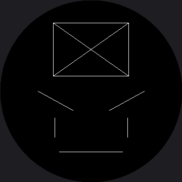

Drawing Lines¶
Lines are the fastest way to put an idea on a screen, and on a robot face they carry more emotion per pixel than anything else you can draw. The driver gives you three commands:
display.hline(x, y, length, color) # horizontal, from a start point
display.vline(x, y, length, color) # vertical, from a start point
display.line(x1, y1, x2, y2, color) # any angle, between two end points
The first two take a start point plus a length. The third takes two full end points. That difference is worth noticing, because mixing them up is a bug that draws something plausible instead of raising an error.
Reach for hline and vline When You Can¶
They skip the angle math, and on this display they do something better: they send one continuous
run of pixels instead of walking the line a dot at a time. A horizontal line is the single cheapest
shape this hardware can draw, which is why shapes.py builds everything else out of them.
| Command | What it costs on this display |
|---|---|
hline() |
One drawing window, then the whole row of color |
vline() |
One window, then the whole column |
line() at an angle |
A walk down the line, roughly one window per pixel |
The Eyebrow Rule
 Angle the inner ends of my eyebrows down toward my nose and I look angry. Angle them up and I look sad or worried. Two lines, four numbers, and a stranger across the room knows how I feel — that is the superpower this whole book is about.
Angle the inner ends of my eyebrows down toward my nose and I look angry. Angle them up and I look sad or worried. Two lines, four numbers, and a stranger across the room knows how I feel — that is the superpower this whole book is about.
Sample Program Code¶
The top half of this program is a box with an X through it, which shows all three commands next to each other. The bottom half is an entire angry face made of nothing but lines.
import config
display = config.init_display()
WHITE = config.WHITE
BLACK = config.BLACK
display.fill(BLACK)
# top: a box built from two hlines and two vlines, with an X of general
# lines inside. It is centered, because a box in the corner of a round
# screen is a box you cannot see.
BOX_X = 105
BOX_Y = 45
BOX_W = 150
BOX_H = 105
display.hline(BOX_X, BOX_Y, BOX_W, WHITE)
display.hline(BOX_X, BOX_Y + BOX_H, BOX_W, WHITE)
display.vline(BOX_X, BOX_Y, BOX_H, WHITE)
display.vline(BOX_X + BOX_W - 1, BOX_Y, BOX_H, WHITE)
display.line(BOX_X, BOX_Y, BOX_X + BOX_W - 1, BOX_Y + BOX_H, WHITE)
display.line(BOX_X, BOX_Y + BOX_H, BOX_X + BOX_W - 1, BOX_Y, WHITE)
# bottom: an angry face made only of lines
# eyebrows angled down toward the nose -- the eyebrow rule
display.line(75, 180, 144, 218, WHITE)
display.line(285, 180, 216, 218, WHITE)
# eyes as short vertical lines
display.vline(108, 233, 39, WHITE)
display.vline(252, 233, 39, WHITE)
# a flat, unimpressed mouth
display.hline(117, 300, 126, WHITE)
Here's what that program draws on the display:

Look at how little that face is. Five lines, no curves, no fills — and it still reads as annoyed. The eyebrows are doing almost all of the work.
Every Line Here Stays Inside the Circle¶
That was a deliberate choice, and it is the constraint you will feel on every layout in this kit. The box is centered at 105 to 255 rather than pushed to the screen edges, and the mouth stops well short of the rim.
The Ends Vanish Before the Middle Does
 Move the mouth down to y=342 and run it again. The ends disappear under the bezel while the middle is still fine — at that y the glass is only about 78 px wide on either side of center, and this mouth reaches 63 px out, so the corners go first. That lopsided failure is the round screen's signature, and once you've seen it you'll recognize it instantly.
Move the mouth down to y=342 and run it again. The ends disappear under the bezel while the middle is still fine — at that y the glass is only about 78 px wide on either side of center, and this mouth reaches 63 px out, so the corners go first. That lopsided failure is the round screen's signature, and once you've seen it you'll recognize it instantly.
Things to Try¶
- Flip the eyebrow rule. Swap the two y-values on each eyebrow line so the inner ends angle up. The same face goes from angry to worried without touching anything else.
- Move the mouth to y=342 and watch the ends get eaten first, as in the warning above.
- Draw the box out at the edges of the square, with x running from 0 to 359. You get four arcs instead of a box, because only the middles of the sides fall inside the glass.
- Thicken a line. Draw the mouth four times at y, y+1, y+2, and y+3. One-pixel lines look like scratches on a screen this size, which is why every stroke in this kit is drawn several times.
References¶
- Eyebrows — the same rule, drawn with curved polygons instead of straight lines
- Drawing Rectangles — where
hlineandvlineget bundled into one call - Screen Coordinates — why the ends of a long line go first
- Drawing Lines on the 1.2" kit — the same lab at 240×240; every coordinate here is that file's number times 1.5